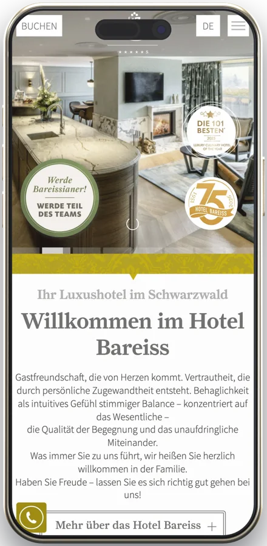
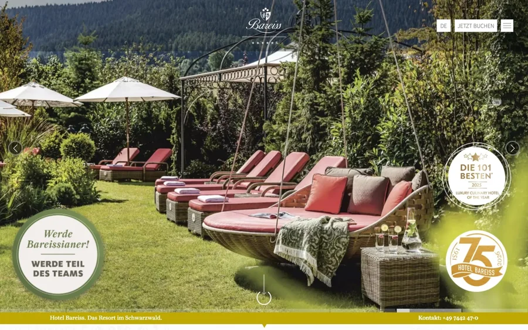

01
Der erste Blick zeigt ein wechselndes Bild und drei runde Siegel, aber keinen Satz über das Haus.
Wobareiss.com, Startseite am 9. November 2026, am Rechner und am Handy: eine Bilderschau über den ganzen Schirm, darauf »Werde Bareissianer! Werde Teil des Teams«, »Die 101 Besten 2025« und »75 Jahre Hotel Bareiss«. Der Willkommenstext steht erst unter dem Bild.
- Für Ihre Gäste
- Wer die Seite öffnet, sieht als Erstes, was das Haus ausmacht, und weiß gleich, warum er hier richtig ist.
- Für Ihr Haus
- Zeigt der erste Blick das Haus am Teich, die Familie seit 1951 und den Kulinarischen Ferientag, liest ein Gast in diesen ersten Sekunden gern weiter.
- Was wir tun würden
- Den ersten Blick dem Haus geben: ein Bild, der Schriftzug, ein Satz und die Buchungsleiste mit Anreise, Abreise und Gästen; die Siegel ruhig weiter unten.